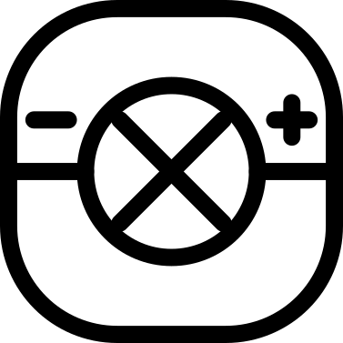
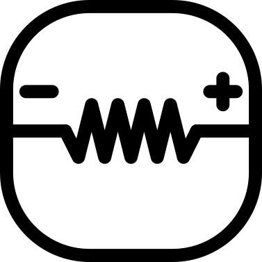
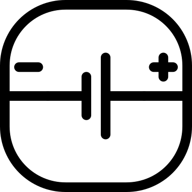
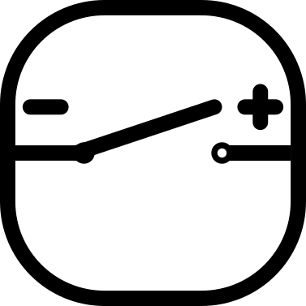

Library
This librabry contains the components that can be used to create circuits. You can add components to the canvas by clicking on the buttons in the library. Each component has its own properties that can be edited in the properties panel.

In this simulator, a Light Bulb acts as a resistor that emits light when current flows. While real-world filament resistance increases with temperature, we assume a constant resistance here for consistent simulation results.

A Resistor is a passive electrical component that resists the flow of electric current. It is used to control the amount of current flowing through a circuit.
It's resistance R is measured in ohms Ω. Ohms Law states that the current I flowing through a resistor is directly proportional to the voltage V across it and inversely proportional to its resistance R, which can be expressed as I = V / R.

A Voltage Source provides a constant potential difference across its terminals to supply power to a circuit. Voltage is measured in Volts (V).
In this simulator, each source includes a small internal resistance to better mimic real-world components, like the batteries found in an electronics kit.
Safety Warning: If the current through a source rises too high, it indicates a short circuit. While the simulator will simply show a high current, a real-world voltage source would likely be damaged or overheat. Avoid connecting voltage sources in parallel or directly to a short circuit.

A Switch is a component that can be used to open or close a circuit. It allows you to control the flow of current in a circuit without having to disconnect the wires.